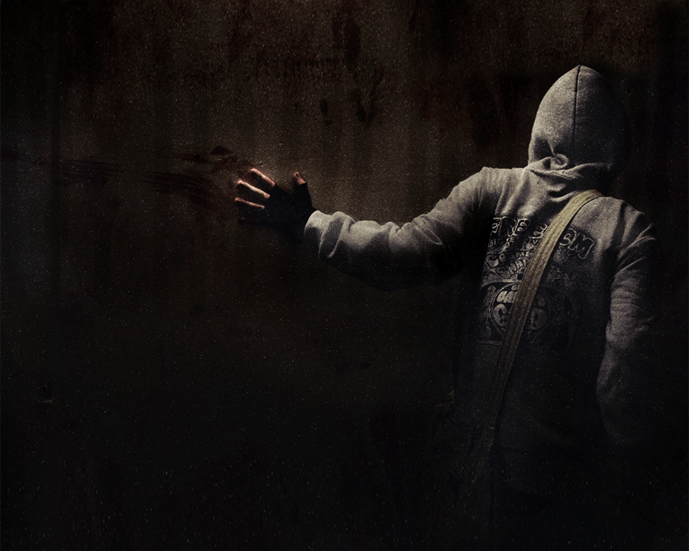
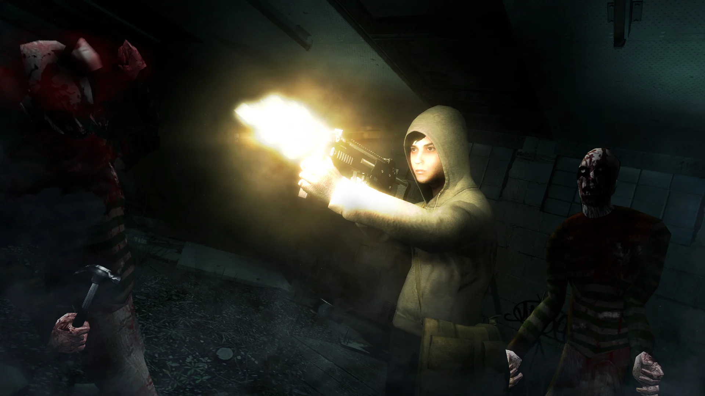
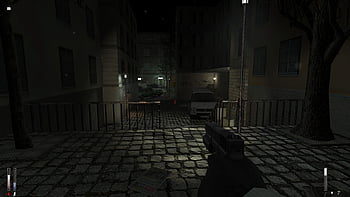
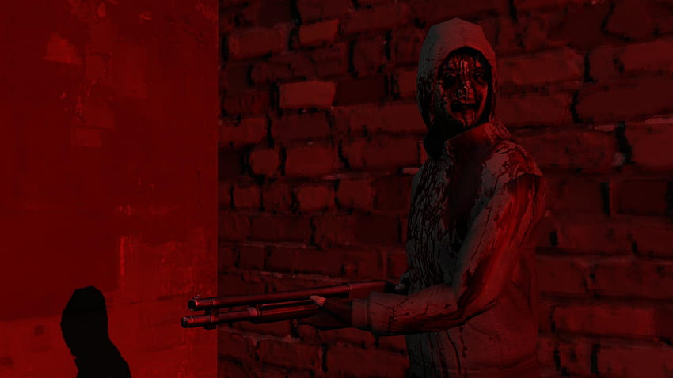
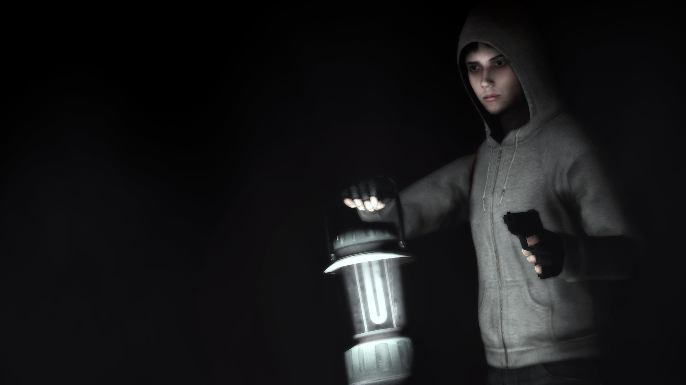
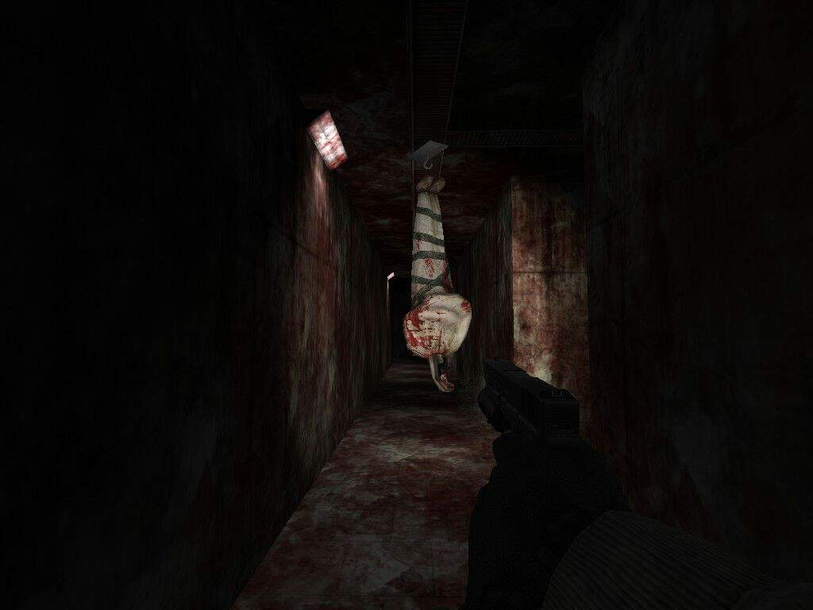

“Cry of Fear” is a psychological horror game that follows the journey of Simon, a young man tormented by nightmares and a dark past. Waking up in an abandoned city, he faces frightening creatures that challenge his sanity. The line between reality and nightmare blurs, leaving players to explore Simon's external and internal horrors. Puzzles, claustrophobic environments and a sinister soundtrack create an immersive experience, delving into the deepest fears of the human mind.